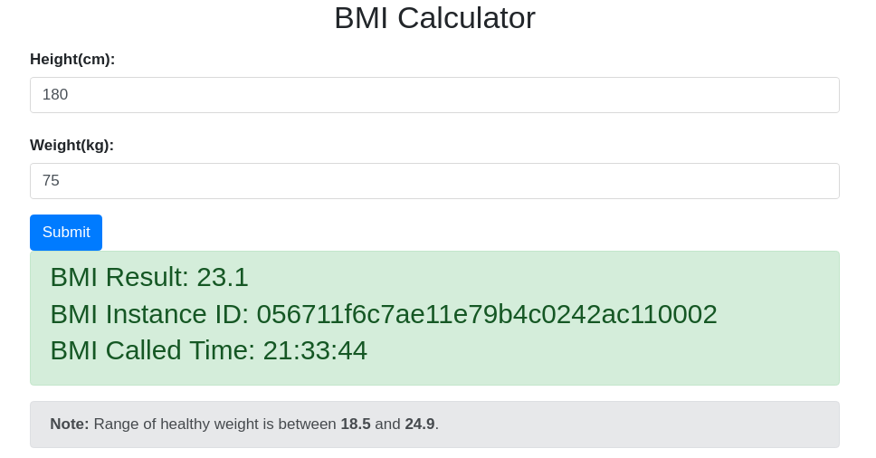

快速入门
安装 Java 开发环境
git clone https://github.com/apache/servicecomb-samples.git
cd servicecomb-samples/java-chassis-samples/bmi
mvn clean install
运行 Service Center
在 ServiceComb 微服务框架中，Service Center 提供服务注册及服务发现功能，可直接使用 Docker 运行。
docker pull servicecomb/service-center
docker run -d -p 30100:30100 servicecomb/service-center:latest
您可以通过阅读环境安装获取在本地以二进制方式运行Service Center的方法。
运行微服务应用
- 进入 体质指数 应用代码目录。
cd servicecomb-samples/java-chassis-samples/bmi
注意：在windows开发环境下，docker是在虚拟机中启动，因此需要修改微服务的 Service Center IP地址为虚拟机IP地址。修改2个配置文件[calculator|webapp]/src/main/resources/application.yml，将其中http://127.0.0.1:30100修改为http://192.168.99.100:30100，其中192.168.99.100是虚拟机IP，需要与开发环境中的虚拟机IP保持一致。
- 启动 体质指数计算器 和 体质指数界面 微服务，分别执行以下指令：
cd calculator; mvn spring-boot:run
cd webapp; mvn spring-boot:run
- 验证服务。微服务启动完毕后，即可通过 http://localhost:8889 访问 体质指数 应用，届时将能看到如下界面，并可输入您的身高和体重信息验证服务是否正常运行。
